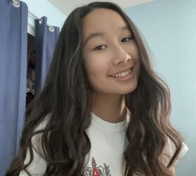

<!DOCTYPE html>
<html lang="en">

<head>

  <meta charset='UTF-8'>
  <meta name="viewport" content="width=device-width, initial-scale=1, shrink-to-fit=no">
  <link rel="shortcut icon" href="img/favicon.ico">
  <meta name="description" content="Pre-Business at UCR">
  <meta name="author" content="862359354">

  <title>Brooke Tabata - Pre-Business Student</title>

  <!-- Bootstrap core CSS -->
  <link href="vendor/bootstrap/css/bootstrap.min.css" rel="stylesheet">

  <!-- Custom fonts for this template -->
  <link href="https://fonts.googleapis.com/css?family=Saira+Extra+Condensed:500,700" rel="stylesheet">
  <link href="https://fonts.googleapis.com/css?family=Muli:400,400i,800,800i" rel="stylesheet">
  <link href="vendor/fontawesome-free/css/all.min.css" rel="stylesheet">

  <!-- Custom styles for this template -->
  <link href="css/resume.min.css" rel="stylesheet">

</head>

<body id="page-top">
  <nav class="navbar navbar-expand-lg navbar-dark bg-primary fixed-top" id="sideNav">
    <a class="navbar-brand js-scroll-trigger" href="#page-top">
      <span class="d-block d-lg-none">Brooke Tabata</span>
      <span class="d-none d-lg-block">
        
      </span>
    </a>
    <button class="navbar-toggler" type="button" data-toggle="collapse" data-target="#navbarSupportedContent" aria-controls="navbarSupportedContent" aria-expanded="false" aria-label="Toggle navigation">
      <span class="navbar-toggler-icon"></span>
    </button>
    <div class="collapse navbar-collapse" id="navbarSupportedContent">
      <ul class="navbar-nav">
        <li class="nav-item">
          <a class="nav-link js-scroll-trigger" href="#about">About</a>
        </li>
        <li class="nav-item">
          <a class="nav-link js-scroll-trigger" href="#experience">Experience</a>
        </li>
        <li class="nav-item">
          <a class="nav-link js-scroll-trigger" href="#education">Education</a>
        </li>
        <li class="nav-item">
          <a class="nav-link js-scroll-trigger" href="#portfolio">Portfolio</a>
        </li>
      </ul>
    </div>
  </div>
  </nav>

  <div class="container-fluid p-0">

    <section class="resume-section p-3 p-lg-5 d-flex align-items-center" id="about">
      <div class="w-100">
        <h1 class="mb-3">Brooke Tabata
        </h1>
        <div class="subheading mb-5">Business Administration📚</div>
        <p class="lead mb-4">My name is Brooke Tabata and I am an 18-year old female Pre-Business student at the University of California, Riverside and my expected graduation year is 2026. I presently work as a certified assistant referee for youth club soccer on the weekends, which helps maintain what has been a lifetime love for soccer and physical fitness. My previous experience includes being a part time crew member at the small business Woodstone Pizzeria located in Chino Hills, CA from 2020 to 2022. At this establishment I typically worked 5-7 hour shifts on 1-4 days of the week. Here I learned how to administer money management proficiently by balancing registers to monitor cash flow, I helped in supervising and training 7+ new members to develop skills in accordance with our restaurant policies and procedures, and throughout my time there I often addressed customer questions and resolved complaints to enhance the customer experience. From 2018-2022 I attended Ruben S. Ayala High School. I was in my high school’s American Student Body association. We advocated for the interests of over 2,500 students by sharing ideas, interests, and concerns with school and district staff and recognized academic and athletic accomplishments of the student body through assemblies, rallies, and posters. Within the association I pursued additional leadership roles, such as the school’s Social Activities Commission and the Athletics commission. For the former activity,  I worked with the Activities Director on the master calendar that the surrounding community referenced for information on upcoming events and school activities. I planned events such as dances, lunchtime activities, and dress up days in order to support and encourage a positive school culture. FInally, I attended and advised weekly Executive Board meetings to plan events for the school. For the latter activity, I organized the National Signing Activity with the school’s Athletic Director. This worked to celebrate and honor athletes with college commitments and scholarships. Within this area of expertise I also managed banner raisings and assisted the Athletic Secretary with issuing and distributing informational letters and recognized all sports and distributing awards and gifts for teams and/or individuals going to the California Interscholastic Federation division. During my high school years I participated in various clubs or community organizations where I often took up a leadership or officer role. Project Unity for example, was one community organization in which I acted as Director of Marketing. Project Unity fostered social compassion to unite the diverse members of the community by engaging youth members in conversations, debates, and social awareness videos, hosted various donation drives to support local senior centers, homeless shelters, first responders , and healthcare workers. For school affiliated clubs, the most notable example is Together We Rise club, in which I was President. I led a 6 person officer team to raise awareness for children in foster care through donation drives, educational meetings, and fundraisers. There was also the Junior State of America club where I was an officer of Public Relations. Our club encourages independent thinking through civil debates and discussions and educates students on the process of government actions such as passing bills, lawmaking, etc.
        </p>
        <div class="social-icons">
          <a target="_blank" id="socialicon-1" href="https://youtube.com">
            <i class="fab fa-linkedin-in"></i>
          </a>
          <a target="_blank" id="socialicon-2" href="https://github.com">
            <i class="fab fa-github"></i>
          </a>
          <a target="_blank" id="socialicon-3" href="https://twitter.com">
            <i class="fab fa-twitter"></i>
          </a>
          <a target="_blank" id="socialicon-4" href="mailto:btaba003@ucr.edu">
            <i class="fa fa-envelope"></i>
          </a>
        </div>
      </div>
    </section>

    <hr class="m-0">

    <section class="resume-section p-3 p-lg-5 d-flex justify-content-center" id="experience">
      <div class="w-100">
        <h2 class="mb-5">Experience</h2>

        <div class="resume-item d-flex flex-column flex-md-row justify-content-between mb-5 experience">
          <div class="resume-content">
            <h3 class="mb-0">Crew Member</h3>
            <div class="subheading mb-3"><a target="_blank" href="https://www.woodstonepizzeriamenu.com/">Woodstone Pizzeria</a></div>
            <p>
              • Administered money management proficiently by balancing registers to monitor cash flow<br> 
              • Supervised and trained 7+ new members to develop skills dance wit h restaurant policies and procedures<br>
              • Addressed customer questions and resolved complaints to enhance customer experience<br>
            </p>
          </div>
          <div class="resume-date text-md-right">
            <span class="text-primary">September 2020 - May 2022</span>
          </div>
        </div>

        <div class="resume-item d-flex flex-column flex-md-row justify-content-between mb-5 experience">
          <div class="resume-content">
            <h3 class="mb-0">Social Activities Commissioner</h3>
            <div class="subheading mb-3"><a target="_blank" href="https://www.chino.k12.ca.us/domain/2143">Ruben S. Ayala High School USB</a></div>
            <p>
              • Worked with Activities Director on the master calendar<br>
              • Planned events such as dances, lunchtime activities, dressup days, and supporting a positive school culture<br>
            </p>
          </div>
          <div class="resume-date text-md-right">
            <span class="text-primary">December 2019 - December 2020</span>
          </div>
        </div>


        <div class="resume-item d-flex flex-column flex-md-row justify-content-between mb-5 experience">
          <div class="resume-content">
            <h3 class="mb-0">Athletics Comissioner</h3>
            <div class="subheading mb-3"><a target="_blank" href="https://www.chino.k12.ca.us/domain/214">Ruben S. Ayala USB</a></div>
            <p>
            • Organized the National Signing Activity with Athletic Director to celebrate at hletes with college commitments<br>
            • Managed banner raisings and assisted Athletic Secretary with issuing and distributing informational letters<br>
            • Recognizing all sports and distributing awards and gifts for teams/individuals going to CIF<br>
            • Attended and advised weekly Executive Board meetings to plan events for the school<br>

          </p>
          </div>
          <div class="resume-date text-md-right">
            <span class="text-primary">December 2021 - December 2022</span>
          </div>
        </div>


      </div>

    </section>

    <hr class="m-0">

    <section class="resume-section p-3 p-lg-5 d-flex align-items-center" id="education">
      <div class="w-100">
        <h2 class="mb-5">Education</h2>

        <div class="resume-item d-flex flex-column flex-md-row justify-content-between mb-5 education">
          <div class="resume-content">
            <h3 class="mb-0">UC Riverside</h3>
            <div class="subheading mb-3">Masters of Business Finance</div>
            <div>MBA in Finance</div>
          </div>
          <div class="resume-date text-md-right">
            <span class="text-primary">September 2022 - June 2026</span>
          </div>
        </div>

        <div class="resume-item d-flex flex-column flex-md-row justify-content-between mb-5 education">
          <div class="resume-content">
            <h3 class="mb-0">Ruben S. Ayala High School</h3>
            <div class="subheading mb-3">Distinguished Scholar</div>
            <div>Honors and Advanced Placement</div>
          </div>
          
          <div class="resume-date text-md-right">
            <span class="text-primary">August 2018 - May 2022</span>
          </div>
        </div>

      </div>
    </section>

    <hr class="m-0">

    <section class="resume-section p-1 p-lg-5 d-flex align-items-center" id="portfolio">
      <div class="w-100">
        <h2 class="mb-5">Portfolio</h1>
        <center>
            <br>
            <br>
            <br>
            <br>
        </center>
      </div>
    </section>

    <hr class="m-0">
    <center>&copy; <script type="text/javascript">
  document.write(new Date().getFullYear());
  </script> Brooke Tabata</center><br>
  </div>
  <!-- Bootstrap core JavaScript -->
  <script src="vendor/jquery/jquery.min.js"></script>
  <script src="vendor/bootstrap/js/bootstrap.bundle.min.js"></script>

  <!-- Plugin JavaScript -->
  <script src="vendor/jquery-easing/jquery.easing.min.js"></script>

  <!-- Custom scripts for this template -->
  <script src="js/resume.min.js"></script>
</body>
</html>
